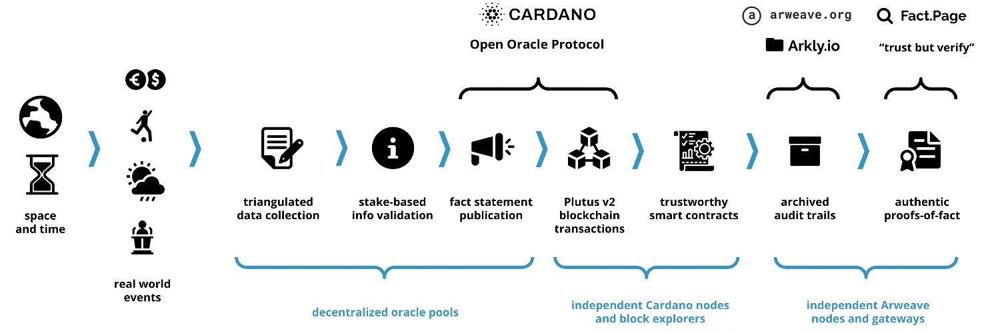

Orcfax implements the open-source Cardano Open Oracle Protocol (COOP). It provides Cardano developers with trustworthy real world data inputs for their on-chain smart contracts.
Orcfax is a next-generation oracle that provides a more comprehensive solution to "the oracle problem". It provides full audit logs for the flow of data through the platform and provides permanent, standards-compliant archival access to them, all in a fully decentralized architecture.
Stuff about ISPO here...